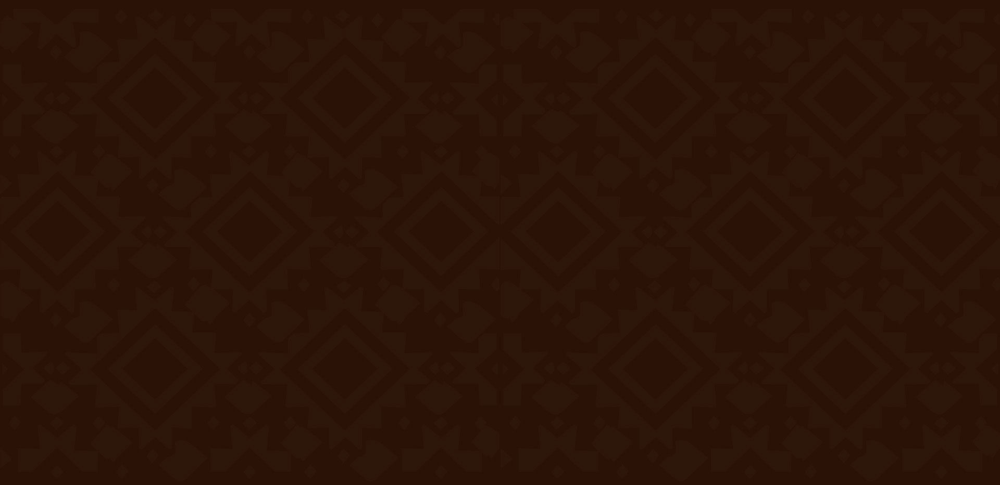

Videoteca
Historias y voces de los pueblos originarios.
Mapuches - Orellie Antoine de Tounens
Sateré Mawé - Ritual de la Tucandeira
Más videos
Canto Ayoreo - Sáude
Danza sagrada - cultura Alutiiq
Juego de pelota Maya - Cobá
Canto Ayoreo - Sáude
Danza sagrada - cultura Alutiiq
Juego de pelota Maya - Cobá